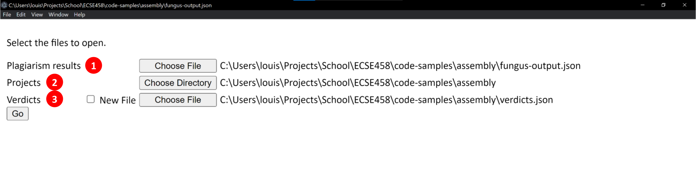
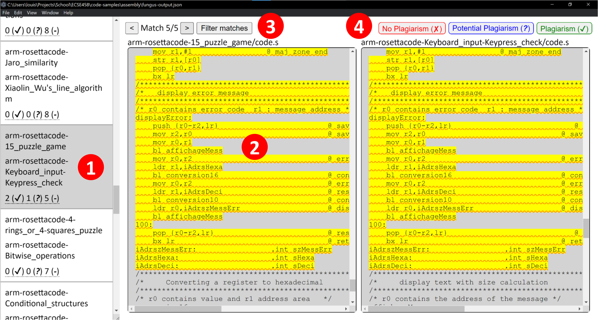

Select the files to open.
There are no warnings to show.
| Type | File | Message |
|---|
Using FUNGUS
Opening Files
Access this page by pressing Ctrl+O (Cmd+O on Mac), or through the menu via File > Open.
To start viewing the output of FUNGUS, you must specify the following three files:
- Plagiarism results. This is the JSON file produced by the command-line tool.
- Projects. This is the root directory that was given as input to the command-line tool.
- Verdicts. This file is used to store your decisions about whether or not a given match is a case of plagiarism. If this file does not yet exist, you must check the "New File" checkbox before choosing where to save it.
Examining Matches
Access this page by pressing Ctrl+M (Cmd+M on MaC), or through the menu via View > Matches.
This page shows the matches identified by the command-line tool.
Project Pairs
The sidebar on the left shows the pairs of projects in which matching code snippets were found. For each project pair, the sidebar shows the number of matches confirmed as plagiarism, the number of matches that are potentially plagiarism, and the number of matches that have not yet been judged.
For example, for the projects arm-rosettacode-15_puzzle_game and arm-rosettacode-Keyboard_input-Keypress_check,
- 2 matches have been confirmed as plagiarism,
- 1 match has been marked as potential plagiarism, and
- 5 matches have yet to be judged.
Navigating Matches
All matching code snippets are highlighted in yellow. The current match is also underlined. To move to the next or previous match, you can use the arrow buttons at the top of the page. You can also click on a highlighted piece of code to jump to that match. In either case, both projects will scroll their side of the selected match into view.
Filtering Matches
To adjust which matches are shown and which are hidden, use the "Filter Matches" button at the top of the page.
Giving Verdicts
You can record whether or not you believe a given match is plagiarism using the buttons at the top right-hand corner of the page. If you change your mind, you can change your choice by adjusting the match filters.
Examining Warnings
Access this page by pressing Ctrl+W (Cmd+W on MaC), or through the menu via View > Warnings.
Getting Help
Access this page by pressing Alt+H, or through the menu by pressing the Help button.